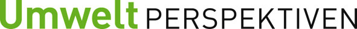

Ensemble oeuvrons pour le développement durable !
Nos partenaires pour la formation
 [2] [2] |
||
| Association pour le droit del'environnement |
Association romande pour la protection des eaux et de l'air |
Le réseau pour une économie durable |
| Durabilité dans l'environnement construit et la gestion d'entreprise |
|
Nos partenaires médias
|  [6] |
Nos sponsors
 [8] [8] |
||
| Naturesse - la vaisselle au naturel | La banque avec une charte environnementale | |